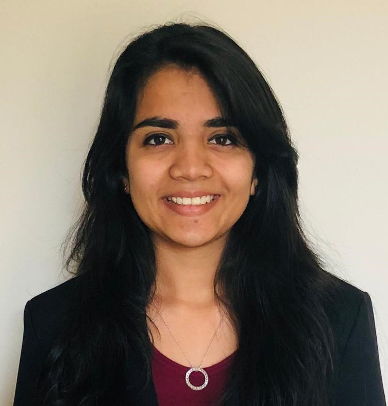

I was part of the team that was brought together by Anagha Madam even before the SWE chapter for CCEW was formalized. I remember sitting in the very first meeting, that we initially had no idea what the agenda for it was and answering real questions about the gender gap in technical education and employment. I always knew that there existed a need to address the issue, but during the discussion when we looked up statistics it made my belief even stronger that SWE CCEW needs to be established. I was never doubtful about how well the chapter was going to do since the cause itself is extremely important to me. I never bothered to forecast its success, all I knew was that if we, the first core team worked hard enough we would not have to worry about a strong foundation. And success would follow.
SWE CCEW was not a conventional tech club and hence it was difficult to explain to students what we did and why we did it. The first few events of the chapter was attended by barely a handful number of students. But we did not give up. With Anagha Madam’s supreme leadership skills we kept at it and continued to increase our outreach by organizing varied and frequent campus events. From inviting women speakers from diverse STEM professions to talk about their experience, to conducting panel discussions and mentorship sessions we were trying to expose the students to as many role models as we possibly can.
In the first year of its conception, we had some really interesting women leaders come and talk to the students. But the most memorable one I think was when an officer from the Indian Air Force shared her experience as a STEM professional serving the country. I was completely amazed not only at her but also at the response it got from the students and faculty members. She managed to hold everyone’s attention about career choices for almost an hour and what ensued was another hour long question-answer round where students were eager to know how to follow her career trajectory. Absolutely incredible! I am sure she managed to inspire a lot of young women that day!
I have and will always stand by the fact that educating young girls and women in STEM opportunities, allowing them to explore this avenue for a career path and just making them realize that nothing is impossible will make a huge difference to the way us women ourselves look at STEM. For generations STEM has been touted as a man’s field and I see the repercussions in the number of women I work alongside vs the number of men on my team. I always wonder how we can bridge this gap and the answer always boils down to education and awareness about STEM and getting rid of the male dominance tag. A diverse team produces the best end result, and we wont have diverse teams till we have substantial female representation. Hence, it is extremely important to make young girls feel confident in choosing a career in STEM.
Fortunately, I have never faced outright discrimination in the two organizations I have worked at. But the sad truth is that there is always an undertone, or subconscious bias towards women professionals. And don’t get me wrong, women have that bias too. So there have been times where I may have felt that my technical opinion was undermined or that I have needed to be more aggressive to get my point across than my male colleagues. In situations like these, I rely on what I call ‘allies’. I have cultivated a relationship with a few of my peers that gives me the liberty to discuss it with them and evaluate whether these situations arose due to a gender bias and if yes how do we resolve it as an organization.
There is no doubt in that SWE has helped me tremendously in my professional and personal growth. SWE CCEW was the first professional outfit I signed up for in my academic career. Working with Anagha Madam and the several opportunities it brought with it to interface with industry professionals at a young age helped me understand my likings. When I graduated from CCEW I came to the US to pursue my Master of Science and was able to join my University’s SWE chapter. Just because I already had so much history with SWE, I was immediately given an officer position which exposed me to even more opportunities for networking and learning. Personally, SWE has helped me hone my leadership and people’s skills. It has given me an alumni network I can rely on and honestly is one of the strongest ties to my alma mater.